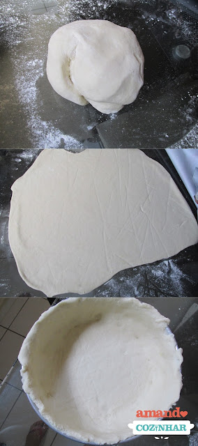
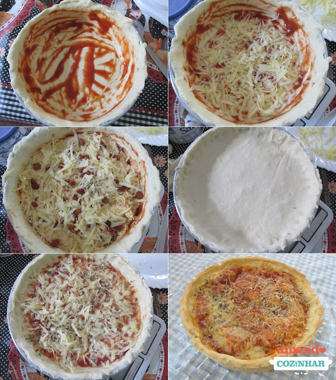

Pizza ao estilo Chicago - Super recheada
Receita de pizza ao estilo Chicago, uma pizza com muito recheio que mais parece uma torta, mas é feita com
massa de pizza!
Ingredientes:
Massa:
2 e 1/2 xícaras de farinha de trigo (300g)1/2 saquinho de fermento biológico seco (5g)1 colher (de sopa) rasa de açúcar (9g) 1 colher (de sopa) de sal (10g) 1 e 1/2 colher de azeite (15g) 3/4 de xícara de água (165g)
Recheio:
Molho de tomate à gosto 500g de peito de frango cozido e desfiado 250g de requeijão cremoso 150g de queijo mussarela ralada 50g de queijo parmesão fresco ralado 150g de bacon cortado em cubos e frito Orégano
Modo de preparo:
Massa:
Misture a farinha, o fermento e o açúcar, adicione metade da água e misture.
Coloque o sal, o azeite e misture.
Adicione o restante da água e sove até a massa ficar lisinha.
Abra a massa com um rolo e coloque dentro de uma forma de torta com fundo removível de 22cm de diâmetro. Retire
o excesso da massa das laterais da forma, abra com o rolo e reserve para cobrir a pizza.

Montagem:
Misture o frango e o catupiry, tempere com sal e pimenta-do-reino.
Passe molho de tomate na massa, coloque metade do queijo mussarela no fundo, coloque metade do frango com
catupiry por cima, espalhe metade do bacon frito e orégano.
Depois coloque o restante do queijo mussarela, o restante de frango, o restante do bacon e orégano.
Coloque o restante da massa da pizza, cobrindo o recheio, aperte as laterais e tire o excesso de massa, faça
furinhos com o garfo por cima.
Por cima dessa massa coloque molho de tomate, o queijo parmesão e orégano.
Leve para assar à 220ºC por 20 minutos ou até dourar.

Assista ao video abaixo para melhor compreensão da receita